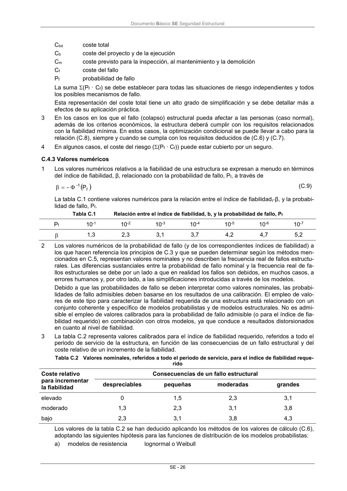

DB-SE · Página 32 · versión 2019-12-20
SHA256: ec1fbfc51b28c4d62667aec480585b76fe31727ccf1615015a5d2d2677763f8f · página física 32 de 45 · métodos de encabezado
solo si están cotejados.
Formatos: Markdown · JSON de bloques · PDF p. 32 · imagen PNG
Documento Básico SE Seguridad Estructural SE - 26 Ctot coste total Cb coste del proyecto y de la ejecución Cm coste previsto para la inspección, al mantenimiento y la demolición Cf coste del fallo Pf probabilidad de fallo La suma (Pf · Cf) se debe establecer para todas las situaciones de riesgo independientes y todos los posibles mecanismos de fallo. Esta representación del coste total tiene un alto grado de simplificación y se debe detallar más a efectos de su aplicación práctica. 3 En los casos en los que el fallo (colapso) estructural pueda afectar a las personas (caso normal), además de los criterios económicos, la estructura deberá cumplir con los requisitos relacionados con la fiabilidad mínima. En estos casos, la optimización condicional se puede llevar a cabo para la relación (C.8), siempre y cuando se cumpla con los requisitos deducidos de (C.6) y (C.7). 4 En algunos casos, el coste del riesgo ((Pf · Cf)) puede estar cubierto por un seguro. C.4.3 Valores numéricos 1 Los valores numéricos relativos a la fiabilidad de una estructura se expresan a menudo en términos del índice de fiabilidad, β, relacionado con la probabilidad de fallo, Pf, a través de f -1 P - (C.9) La tabla C.1 contiene valores numéricos para la relación entre el índice de fiabilidad, β, y la probabi- lidad de fallo, Pf. Tabla C.1 Relación entre el índice de fiabilidad, b, y la probabilidad de fallo, Pf Pf 10-1 10-2 10-3 10-4 10-5 10-6 10-7 1,3 2,3 3,1 3,7 4,2 4,7 5,2 2 Los valores numéricos de la probabilidad de fallo (y de los correspondientes índices de fiabilidad) a los que hacen referencia los principios de C.3 y que se pueden determinar según los métodos men- cionados en C.5, representan valores nominales y no describen la frecuencia real de fallos estructu- rales. Las diferencias sustanciales entre la probabilidad de fallo nominal y la frecuencia real de fa- llos estructurales se debe por un lado a que en realidad los fallos son debidos, en muchos casos, a errores humanos y, por otro lado, a las simplificaciones introducidas a través de los modelos. Debido a que las probabilidades de fallo se deben interpretar como valores nominales, las probabi- lidades de fallo admisibles deben basarse en los resultados de una calibración. El empleo de valo- res de este tipo para caracterizar la fiabilidad requerida de una estructura está relacionado con un conjunto coherente y específico de modelos probabilistas y de modelos estructurales. No es admi- sible el empleo de valores calibrados para la probabilidad de fallo admisible (o para el índice de fia- bilidad requerido) en combinación con otros modelos, ya que conduce a resultados distorsionados en cuanto al nivel de fiabilidad. 3 La tabla C.2 representa valores calibrados para el índice de fiabilidad requerido, referidos a todo el periodo de servicio de la estructura, en función de las consecuencias de un fallo estructural y del coste relativo de un incremento de la fiabilidad. Tabla C.2 Valores nominales, referidos a todo el periodo de servicio, para el índice de fiabilidad reque- rido Coste relativo para incrementar la fiabilidad Consecuencias de un fallo estructural despreciables pequeñas moderadas grandes elevado 0 1,5 2,3 3,1 moderado 1,3 2,3 3,1 3,8 bajo 2,3 3,1 3,8 4,3 Los valores de la tabla C.2 se han deducido aplicando los métodos de los valores de cálculo (C.6), adoptando las siguientes hipótesis para las funciones de distribución de los modelos probabilistas: a) modelos de resistencia lognormal o Weibull
